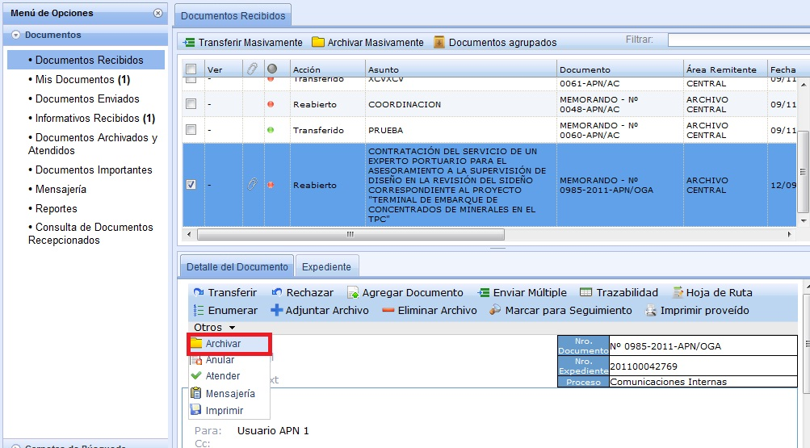
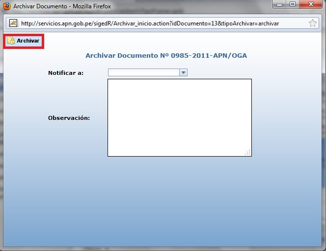
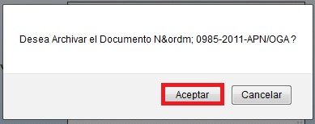

Archivar:
Seleccionamos el Documento, en el Detalle ingresamos a la opción Otros (Archivar).

Al seleccionar se muestra la siguiente pantalla: En donde seleccionamos en "Archivar".

Luego aparecerá el siguiente mensaje, en donde seleccionamos en "Aceptar".

Created with the Personal Edition of HelpNDoc: Easy CHM and documentation editor